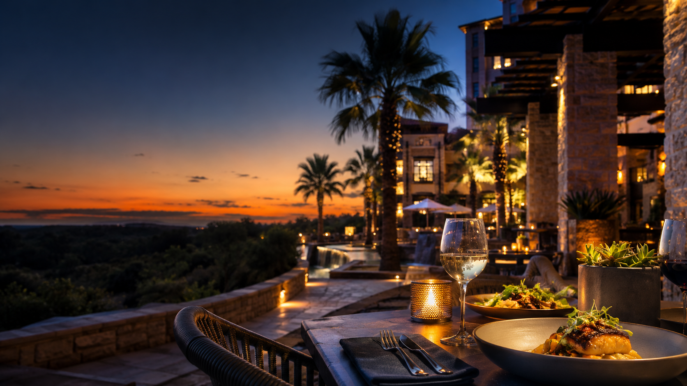
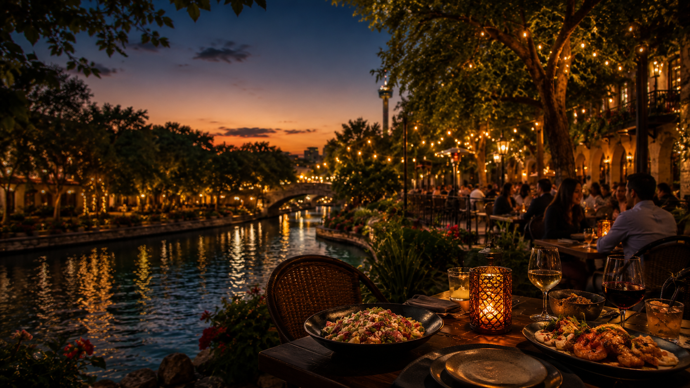
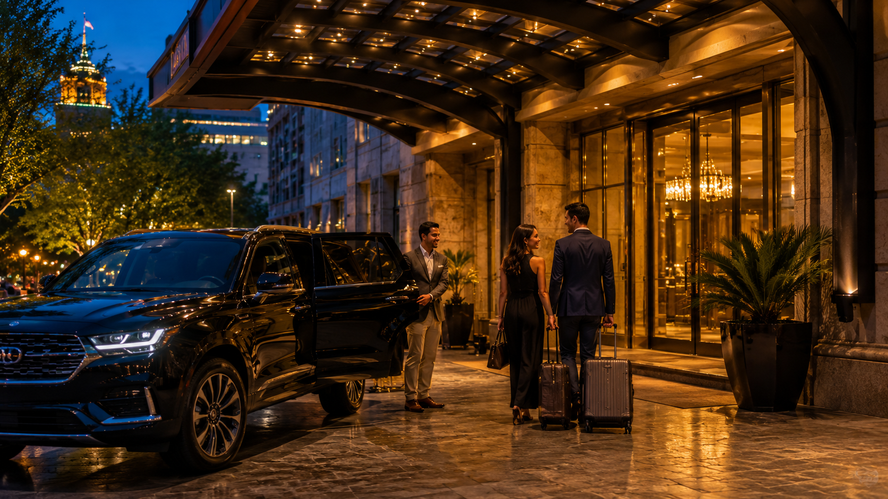
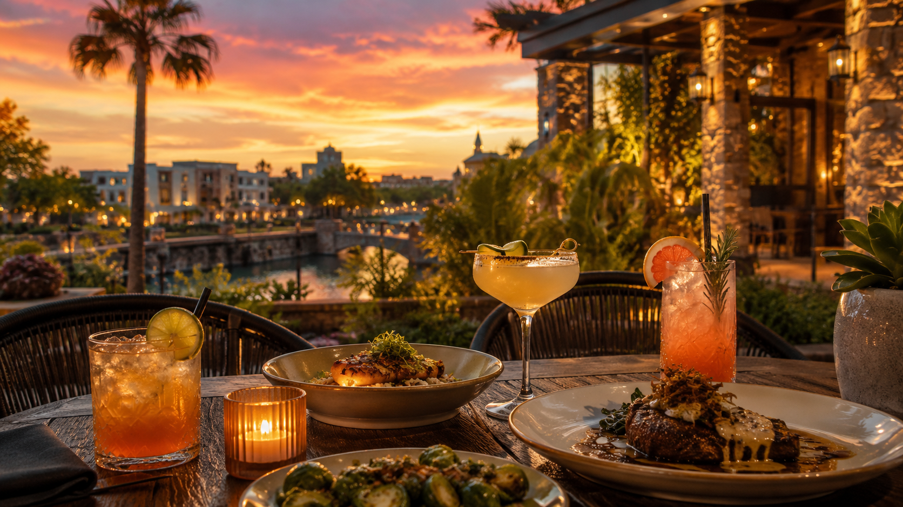

Close & easy
Stay near the resort when arrival fatigue, kids, golf schedules, or conference overlap make distance the enemy.
Resort Food Guide
For guests who do not want to gamble on distance after pool, golf, or a long travel day — plus quick moves before downtown, the airport, or a convention night.
Decision Layer
Resort nights usually come down to two questions: how far should you drive after a travel day, and whether 1604 / 281 traffic punishes the reservation window.
Stay near the resort when arrival fatigue, kids, golf schedules, or conference overlap make distance the enemy.
Use nearby high-quality zones when the group wants a better meal without turning dinner into a downtown mission.
Drive farther only when the restaurant is the story: Soluna, Bohanan’s, J-Prime, Brasão, El Bucanero, or a strong Pearl dinner.

JW / TPC guests should match tee times, spa windows, and 281 traffic before committing to a steakhouse departure.

Close-and-easy protects tired groups. Worth-the-ride earns the story when you have one free evening.
Ask The SA Plug: Tell us your hotel, party size, timing, and dinner mood. We’ll map distance, traffic, dress code, and the safest route so you’re not guessing rideshare minutes in the lobby. Send the note.
Resort guest desk
Match the hotel bubble before you chase downtown. Each lane keeps tired families, business travelers, and pool days sane.
 JW corridor
JW corridor
On-property signatures plus short rideshare steak upgrades.
Jump to JW / TPC lane
Hill CountryPractical rings near SeaWorld and splash-day fatigue.
Jump to Hyatt lane Shopping corridor
Shopping corridor
Steak, rodizio, and easy family backups without downtown traffic.
Jump to La Cantera lane Low fuel nights
Low fuel nights
Close-and-easy when kids, flights, or conferences drain the crew.
Jump to tired-night picks Departures
Departures
Keep buffers honest on 281 / 1604 nights before an early flight.
Plan timing + routing
One big nightStory dinners worth the ride, then reset meals around the pool.
Jump to story dinnersCanyon Ridge & 281
Use this lane when golf, spa timing, and north-side traffic windows decide whether you stay close or stage a polished rideshare dinner.
18 Oaks, Cibolo Moon, FIAMME, and High Velocity keep the night easy when golf, spa, conference, or family timing matters.
J-Prime and Chama Gaúcha work when the group wants a polished meal without going downtown.
La Panadería, Lupe Tortilla, and nearby casual options help when kids, weather, or timing make white-tablecloth plans unrealistic.
La Cantera Playground
This corridor is the easiest upscale lane outside downtown: strong steakhouses, practical family backups, and polished options without River Walk logistics.
Brasão and J-Prime anchor the zone when the group wants a strong dinner without downtown parking or River Walk traffic.
Parry’s Pizza, Lupe Tortilla, La Panadería, and easy Rim-area choices keep the night practical when the group is hungry now.
Signature, Perry’s, Haywire, and Whiskey Cake can work when Hill Country polish matters more than staying close to the hotel.
Resort Drive & SeaWorld
Keep this side practical first. Save long drives for true story nights and use the nearby ring for reliable family pace.
Antlers Lodge and Springhouse keep families close when pool time, theme parks, or tired kids make proximity the priority.
Fish City Grill, The Jerk Shack, Via 313, Alamo Ranch casuals, and easy local stops stretch the palate without hauling downtown.
If you only have one big San Antonio dinner, consider staging downtown, Pearl, or The Rim instead of forcing a nearby compromise.
1604 & 281 Blend
North-side stays work best when you decide early whether this is a steakhouse night, research-driven food night, or traffic-control night.
J-Prime, Chama Gaúcha, and Fogo cluster well for groups staying north who want polish without crossing the city.
Chef counters, sushi, omakase, and new hot spots change quickly. Use this lane for updated week-of recommendations.
Rush peaks can turn a simple plan into two separate rideshare moves. Book earlier or split groups when timing is tight.
Story dinner shortlist
These are the meals worth leaving the resort bubble for when the night needs to feel memorable.
Ribeye tacos and chispas make this the personal favorite when the group wants San Antonio flavor with upscale energy.
Classic downtown steakhouse polish when the table needs to feel important.
North-side steakhouse glamour when the resort corridor points away from downtown.
Best Brazilian steakhouse lane when the group wants rodizio energy and a big-night table.
Best ceviche lane when seafood, spice, and local flavor matter more than white-tablecloth energy.
River Walk Italian comfort when the group wants classic San Antonio dining without overthinking the night.
Practical logic
When timing slips or the day runs long, use this playbook to protect energy and still eat well.
Use on-property kitchens when thunderstorms, flight delays, golf schedules, or group fatigue make distance a bad bet.
Lupe Tortilla and practical nearby Tex-Mex options keep the group fed without turning dinner into a production.
Fish City Grill and casual seafood options work when the group wants lighter food without a long drive.
Sometimes room service, a nearby casual stop, and La Panadería tomorrow beats forcing a late reservation.
Story-night planning
Pick one story lane and commit. This keeps resort nights memorable without exhausting the group.
Say yes when the dinner itself is the memory, everyone is aligned on timing, and you can reserve around traffic peaks.
Best for: celebrations, hosted business nights, and one free evening in the trip.
Stay local when arrivals run late, kids are fading, weather is unstable, or your next morning starts early.
Best for: first night, theme-park days, and conference-heavy itineraries.
Bohanan’s, Domingo, Ácenar, Paesanos, or Esquire when you want River Walk energy and a complete night.
Hotel Emma / Supper, Brasserie Mon Chou Chou, Ladino, Amelia Social Lounge, or Sternewirth when the night needs district energy.
El Bucanero or El Cevichero when the group wants a flavor-first local meal.
Soluna is worth punching into maps when ribeye tacos and chispas are the move.
J-Prime and Chama Gaúcha live naturally between JW-style stays, Stone Oak, and north-side business plans.
If night one is polished, use night two for a casual contrast around The Rim or La Cantera.